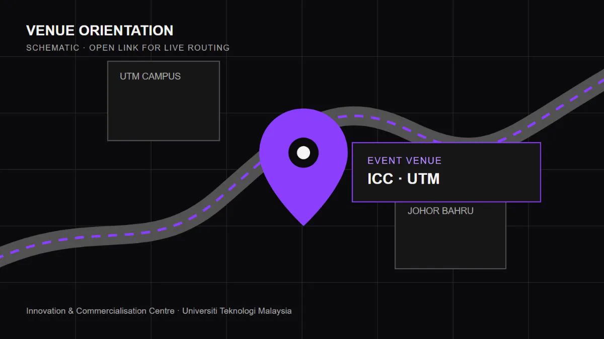

UTM · JOHOR BAHRU · 24 OCTOBER 2026
QiskitFall Fest2026 @ UTM
Software Ready, Hardware still Awaiting.
Saturday, 24 October 202608:00–18:00 MYT (UTC+8)
ICC, Innovation & Commercialisation CentreUniversiti Teknologi Malaysia, Johor Bahru
10 years of quantum on the cloud
01
WHY THIS MATTERS
A first quantum step, built for students.
Qiskit Fall Fest brings Malaysia's student community together for one day of practical quantum learning. UTM is one of only three Malaysian universities selected for IBM sponsorship in the 2026 cycle.
A Decade of Quantum on the Cloud
The 2026 global theme marks ten years since the first open-access quantum computer became available on the cloud.
02
WHAT YOU WILL DO
Listen. Build. Visit.
Move from a shared foundation to hands-on work, then see the university labs that keep the questions going.
Hear from two disciplines
Connect quantum physics and computing through UTM academic talks.
Build with Qiskit
Take practical first steps in two interactive sessions.
Visit working labs
Tour AQSolotl and the Quantum Lab in the Department of Physics.
SATURDAY · 24 OCTOBER
One day. Full signal.
ALL TIMES MYT · UTC+8
| Time · MYT | Session |
|---|---|
| 08:00–08:30 | Breakfast |
| 08:30–09:00 | Registration and attendance |
| 09:00–09:21 | Opening: welcome from the Deans of the Faculty of Computing and the Faculty of Science, followed by the opening ceremony |
| 09:21–09:30 | Break |
| 09:30–10:45 | Group forming and self-introductions |
| 10:45–11:00 | Talks by Dr. Yap Yung Szen and Ts. Dr. Nur Haliza Abdul Wahab |
| 11:00–11:15 | Programme briefing by the student committee |
| 11:15–12:45 | Interactive Qiskit session 1 |
| 12:45–14:00 | Lunch and exhibition booth |
| 14:00–14:45 | Student sharings |
| 14:45–15:15 | Launch of the UTM Quantum Community and future initiatives |
| 15:15–16:45 | Interactive Qiskit session 2 |
| 16:45–17:00 | Closing and appreciation |
| 17:00–18:00 | Lab visits: AQSolotl and the Quantum Lab, Department of Physics |
| 18:00 | End |
- Breakfast
- Registration and attendance
- Opening: Deans' welcome and opening ceremony
- Break
- Group forming and self-introductions
- Academic advisor talks
- Programme briefing
- Interactive Qiskit session 1
- Lunch and exhibition booth
- Student sharings
- Launch of the UTM Quantum Community
- Interactive Qiskit session 2
- Closing and appreciation
- Lab visits: AQSolotl and the Quantum Lab
- End
03
SPEAKERS & ADVISORS
Physics meets computing.
Two UTM academic advisors connect the science behind quantum systems with the computing practice students can begin today.
YYPhoto pending approval
FACULTY OF SCIENCE · PHYSICS
Dr. Yap Yung Szen
Academic advisor and speaker
Bringing the physics perspective to the beginner-friendly programme.
NHPhoto pending approval
FACULTY OF COMPUTING
Ts. Dr. Nur Haliza Abdul Wahab
Academic advisor and speaker
Connecting quantum concepts with computing practice.
GETTING THERE
ICC, UTM Johor Bahru.

Open live directions ↗ON CAMPUS
Innovation & Commercialisation Centre
Universiti Teknologi Malaysia, Johor Bahru
- Please arrive before 08:30 for breakfast and registration.
- Parking and check-in details are pending committee confirmation.
BE READY
What to bring
- A laptop and charger
- An IBM Quantum account
- A refillable water bottle and student identification
- Questions and curiosity; no prior quantum experience is assumed
04
KEEP LEARNING
Your quantum starting points.
Set up before the event, keep references open during the sessions, and continue afterwards.
before
Event materials repository
Fall Fest materials and learning resources.
Open repository ↗before
IBM Quantum Platform
Create your cloud account before event day.
Open platform ↗during
Qiskit documentation
Guides for the hands-on sessions.
Read guides ↗after
Qiskit learning
Continue into structured courses.
Start learning ↗THE OUTCOME
UTM Quantum Community starts here.
The day launches a student-led community with a path to MyQI affiliation and annual continuity.
See the community plan →05
COLLABORATION
Student-led. Institution-backed.
Organised by a student-led committee at UTM in collaboration with IBM Quantum, the Faculty of Computing, and the Faculty of Science.
IBM QuantumApproved logo pending
UTM Faculty of ComputingApproved logo pending
UTM Faculty of ScienceApproved logo pending
Event sponsors
Sponsor this student event
Support beginner access to quantum computing in Malaysia. Committee contact details will be published after confirmation.
06
BEFORE YOU ARRIVE
Questions, answered plainly.
Confirmed details appear directly. Items still awaiting committee confirmation are marked as pending rather than guessed.
Do I need quantum computing experience?
No. The day is designed for beginners from computing, science, and other fields.
How much does it cost?
Pending committee confirmation.
What language will the sessions use?
Pending committee confirmation.
Must I bring a laptop?
Yes. Bring a charged laptop, charger, and an IBM Quantum account.
Will participants receive a certificate?
Pending committee confirmation.
Will food be provided?
Breakfast and lunch appear in the agenda; dietary details are pending.
Are prayer facilities available?
The nearest facilities and route are pending confirmation.
How do I travel to ICC and where can I park?
Use the map link for live routing. Parking and drop-off instructions are pending.
Will photos or video be taken?
Yes. Tell the registration desk on arrival if you prefer not to appear.
Does this website track me?
No analytics, cookies, advertising, or local storage of personal data are used.